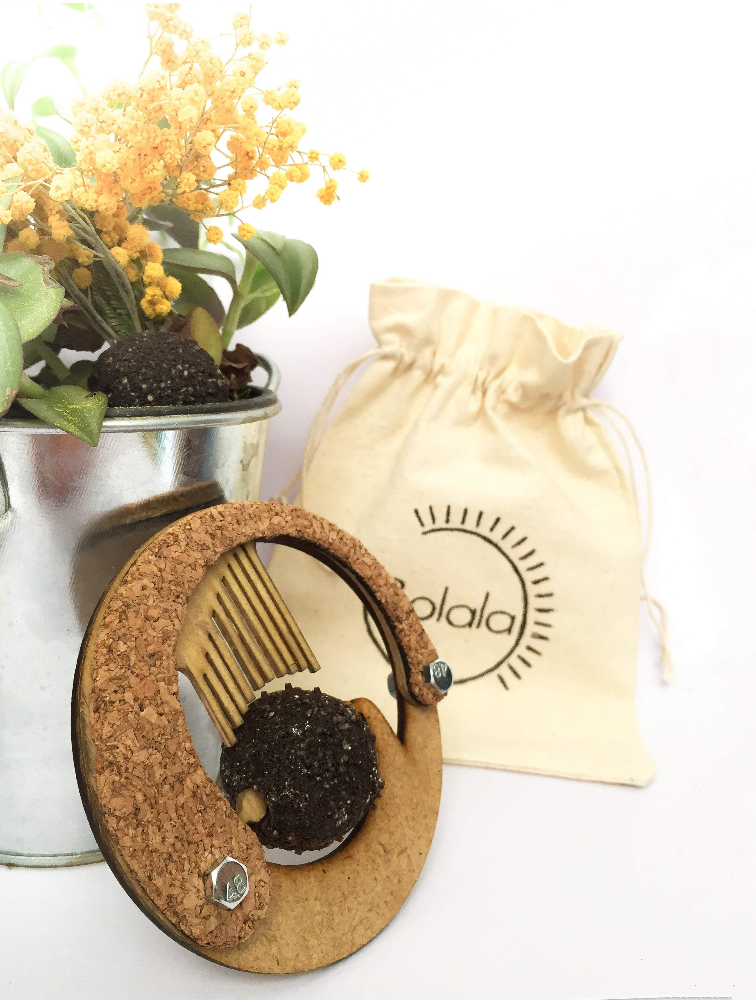

________________________________________________________________
Bolala - Una mezcla de café y musica
________________________________________________________________
Bolala es un artefacto musical hecho de café reciclado y otros materiales orgánicos como la madera y el corcho. La sorpresa esta en que bola de café contiene una pequeña melodía y, gracias al soporte de madera y corcho, puede hacerse sonar cual una caja de música.
Este proyecto ha sido diseñado con la intención de recaudar fondos por la compra de café orgánico. Ese dinero sería donado como una ayuda adicional a estos pequeños productores del "oro negro", ya que podrían continuar para mantener su negocio y, al mismo tiempo, impulsarlo con una campaña Bolala.
Uno de los objetivos, era el de promover que ciertos materiales considerados desechos (...como el café usado) tienen mucho potencial para ser reusados o transformados en algo mejor, llamado el Upcycling. El café, además de ser un fertilizante perfecto y natural puede mezclarse con agente naturales solidificantes con los que obtener materiales parecido al plástico.
●
●
●
________________________________________________________________
Además, cuando el usuario se aburra de la "Bolamelodia" o se le rompa,
puede enterrarla y dar vida a las semillas que estan esperando en su interior.